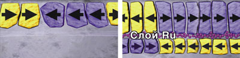
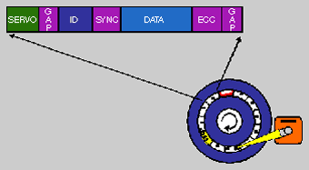
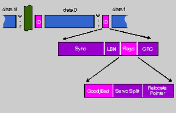
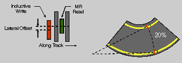
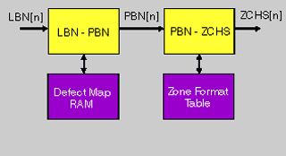
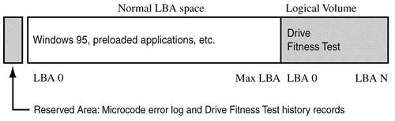
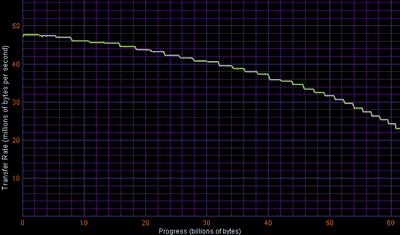
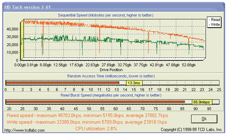
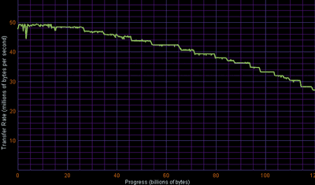
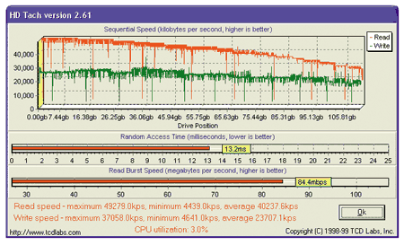

Олег Денисов, Сергей Назаров
После сезона 2000-2001 гг., когда производители винчестеров в нерешительности топтались на месте и фактически заморозили развитие накопителей этого типа, рынок жестких дисков переживает бурный подъем. Благодаря внедрению разработанного IBM нового магнитного AFC-покрытия (об этой технологии см. ниже) плотность записи на поверхности дисковых пластин за последний год выросла вдвое, достигнув отметки 30 Гбит/кв. дюйм и более. И это далеко не предел - ожидается, что плотность записи AFC-дисков к 2003 г. достигнет 100 Гбит/кв. дюйм, а емкость - 400-500 Гбайт. Это повлекло за собой и двукратное увеличение максимального объема накопителей (с 75 до 160 Гбайт), скорости чтения (с 41 до 49 Гбайт/с) и в итоге снижение стоимости в расчете на 1 Гбайт емкости (в 2-2,5 раза). Более того, падение цен было настолько значительным, что по стоимости накопители со скоростью вращения 7200 об./мин практически догнали винчестеры со скоростью 5400 об./мин, и последним ничего не остается, как сменить "весовую категорию", покинув рынок ПК и перейдя в разряд дешевых накопителей для цифровой бытовой электроники.
Среди других значимых событий в мире жестких IDE-дисков за последнее время назовем увеличение пропускной способности ATA-шины со 100 до 133 Мбайт/с (что, впрочем, пока излишне) и планируемое появление в 2003 г. накопителей с шиной Serial ATA со скоростью передачи данных 150 Мбайт/с (в перспективе до 300 Мбайт/с, когда появится интерфейс Serial ATA II), рост объема кэш-буфера (стандартно 2 Мбайт, максимум 8 Мбайт) и оснащение дисков двигателями на жидкостных подшипниках (что снижает вибрацию блока с дисковыми пластинами и уровень шума).
Технология трехслойного магнитного покрытия AFC
В последних моделях жестких дисков компания IBM начала применять магнитное покрытие нового типа - с антиферромагнитной связью, так называемое AFC-покрытие (AntiFerromagnetically Coupled). В отличие от традиционного подхода, когда магнитное покрытие дисковой пластины образуется одним слоем магнитных доменов, AFC-покрытие состоит из трех слоев - двух магнитных слоев и проложенного между ними тончайшего трехатомного слоя немагнитного металла рутения (рис. 1). Суть технологии в том, что домены двух магнитных слоев объединяются в пары, причем магнитные поля доменов в одной паре направлены всегда противоположно, и это увеличивает устойчивость доменной структуры к тепловым возмущениям. Поэтому размеры доменов можно уменьшить, что автоматически приводит к увеличению плотности записи.
Ожидается, что к 2003 г. плотность записи на поверхности дисковых пластин с AFC-покрытием достигнет 100 Гбит/кв. дюйм, а емкость оснащенных ими жестких дисков - 400-500 Гбайт.
|  |
| Рис. 1. Традиционное магнитное покрытие и AFC-покрытие.
|
Технология IBM No-ID Sector Format - форматирование без ... форматирования
Существует такое понятие, как эффективность форматирования жесткого диска (format efficiency), которое вычисляется как отношение объема полезных (пользовательских) данных, хранимых на диске, к общему объему данных на нем и во многом зависит от рационального использования места на треках носителя.
Трек диска разбивается на множество частей, имеющих самое разное назначение (рис. 2). Cервополя (servo fields) предназначены для точного позиционирования головки над треком, поля синхронизации (synchronization fields) и ECC-поля с контрольными суммами (ECC fields) используются при считывании данных с трека. Собственно полезная информация хранится в полях (они же секторы) с данными (data fields). На треке также обязательно оставляются пустые запасные поля (gap), которые используются как резервное пространство для перемещения данных из сбойных участков трека, могущих появиться во время работы диска. Помимо этого на треке есть идентификационные ID-поля (ID fields).
|  | Рис. 2. Структура трека жесткого диска.
|
В современных жестких дисках используется такой способ внешнего представления данных, когда каждый сектор данных на диске маркируется номером логического блока (Logical Block Number, LBN). Такой метод нумерации называется адресацией логических блоков (Logical Block Addressing, LBA). При LBA-адресации компьютер "видит" жесткий диск как набор логических блоков с последовательными номерами от 0 до некоторого максимального значения, определяемого полезной емкостью диска.
LBA-номер, он же LBN, каждого сектора данных хранится в соответствующем ID-поле, позволяя однозначно идентифицировать этот сектор данных. ID-поля и секторы с данными располагаются всегда попарно, при этом между ними есть взаимно-однозначное соответствие: каждому ID-полю "принадлежит" его и только его сектор с данными, а каждому сектору данных - свое ID-поле. В ID-поле хранится и другая служебная информация о секторе данных, например, годен ли он для хранения данных или нет (bad sector) - за это в ID-поле отвечает флаг Good/Bad.
Каждому логическому блоку соответствует сектор данных на поверхности диска, но об этом соответствии "знает" только сервосистема носителя, так как внутри жесткого диска используется своя схема нумерации секторов данных - так называемая ZCHS-адресация (Z - zone, C - cylinder, H - head, S - sector). Поэтому когда требуется считать информацию с диска или записать на диск, компьютер сообщает диску LBA-номера блоков данных, содержимое которых следует прочитать или перезаписать. В свою очередь сервосистема диска по LBA-номеру блока вычисляет номера зоны, цилиндра, головки и сектора. Первые три номера однозначно определяют трек диска - и, зная их, сервосистема устанавливает головку диска (одну из нескольких) на нужный трек и начинает считывать информацию во всех ID-полях, "встречающихся" ей на пути, - так буквально и происходит до тех пор, пока не обнаружится ID-поле, в котором хранится LBA-номер сектора данных, равный искомому. После этого головка передвигается к сектору данных, который соответствует найденному ID-полю, и (наконец-то!) считывает или записывает данные. При поиске следующего сектора данных весь процесс повторяется заново. При этом львиная доля времени, затрачиваемого на поиск нужного сектора данных, приходится на считывание ID-полей с трека.
Концепция ID-полей обеспечивает большую гибкость в процессе форматирования диска и позволяет реализовать простой механизм обнаружения и устранения дефектов в форматированной структуре. Однако на практике она приводит к существенным накладным расходам. Так, ID-поля занимают до 10% емкости трека на диске. Кроме того, использование ID-полей требует, чтобы непосредственно перед каждым ID-полем имелся один небольшой и абсолютно пустой участок трека (рис. 3) - так называемое поле восстановления тракта чтения после операции записи (write-to-read recovery field, сокращенно w-r field или w-r-поле). Это связано с тем, что головке требуется какой-то промежуток времени, чтобы переключиться с операции записи на операцию чтения (именно в такой последовательности, в противном случае проблем нет). Представьте себе головку, которая, двигаясь вдоль трека, только что прошла над сектором данных, совершив операцию записи, и приближается к ID-полю, которое ей нужно считать. За то время, что головка проходит от записанного ею сектора данных до ID-поля, она должна успеть восстановиться после операции записи и подготовиться к операции чтения ("погасить", "сбросить" поле, создаваемое индуктивным записывающим элементом). Если сектор данных и ID-поле расположены близко, то головка этого сделать не успеет. Выход напрашивается сам собой - оставить на треке между сектором данных и ID-полем участок пустого пространства (w-r-поле), протяженность которого обеспечит головке время, необходимое для восстановления. Но это опять накладные расходы: w-r-поля занимают более 5% емкости трека.
|  | Рис. 3. W-r-поля на треке диска.
|
Другая проблема при использовании ID-полей связана с ограничением на плотность треков на поверхности диска, причина которого скрыта в механике сервопривода. В современных дисках сдвоенная головка закрепляется на конце актюатора, который перемещается поперек дисковой пластины. При этом корпус головки довольно заметно поворачивается по отношению к трекам, так как ход актюатора составляет около 20°. Из-за этого между центрами считывающего сенсора и записывающей индуктивной головки возникает боковое смещение (latteral offset) (рис. 4). Иными словами, если через их центры провести прямые, параллельные касательной к треку, то между ними будет какое-то расстояние, которое и даст величину бокового смещения. И вот здесь начинаются проблемы.
|  | Рис. 4. Боковое смещение считывающего сенсора и записывающей головки.
|
С одной стороны, наилучшая производительность на операциях чтения/записи достигается тогда, когда центр считывающего сенсора/записывающей головки позиционируется над центральной линией трека. С другой стороны - величина возникающего бокового смещения сравнима с толщиной трека, поэтому считывающий сенсор и записывающую головку невозможно одновременно позиционировать над центральной линией трека. Выход из этой ситуации очевиден: на операциях чтения центрировать положение считывающего сенсора, а на операциях записи - записывающей головки. И здесь есть небольшое "но": актюатор должен успевать немного передвигать головку между операциями чтения и записи на одном треке. Но и это не составляло бы проблемы, если бы не ID-поля, которые расположены настолько близко к предшествующим секторам данных, что, несмотря на наличие промежуточных w-r-полей, актюатор уже не успевает отцентрировать положение считывающего сенсора для чтения ID-поля после операции записи данных в предшествующий сектор.
Единственный способ решить разом все проблемы с позиционированием головки - увеличить ширину записываемого трека как минимум до величины, сравнимой со значением бокового смещения между сенсором и записывающей головкой. В таком случае записывающая головка всегда "идет" по центру трека, а считывающий сенсор отстоит от центра трека на величину бокового смещения, но все еще находится в пределах записанной области и способен считать информацию. Это решение приводит к тому, что плотность треков на диске определяется исключительно "грубыми" механическими факторами - размерами и взаимным расположением компонентов головки, что на определенном этапе развития технологии производства дисковых накопителей стало основным препятствием на пути увеличения плотности треков и, как следствие, плотности записи на поверхности диска.
Итак, во-первых, ID-поля "съедают" как минимум 15% форматированной емкости диска. Во-вторых, они не позволяют увеличить плотность треков, а вместе с ней и общую емкость диска. В-третьих, поиск сектора данных на треке происходит методом последовательного перебора всех встречающихся ID-полей этого трека, что неэффективно с точки зрения временных затрат.
Технология No-ID Sector Format, разработанная IBM, позволяет избавиться от этих недостатков. Ее идея проста: использовать для хранения служебной информации о структуре форматированного носителя не дисковую, а электронную память, для чего используются твердотельные RAM-модули (solid state RAM memory). Последствия такого подхода весьма результативны: на диске освобождается место, использовавшееся ранее под ID-поля и сервополя; исчезает ограничение на плотность треков; сокращается время поиска секторов с данными, поскольку вся необходимая для этого информация хранится теперь в RAM-памяти. Само понятие ID-поля исчезает, а процесс низкоуровневого форматирования становится "фиктивным" - все данные о разметке диска сохраняются в RAM-памяти, а не на его поверхности. В целом же применение технологии No-ID Sector Format в сочетании с последними моделями головок позволяет увеличить общий полезный объем диска на 30% по сравнению с традиционной технологией форматирования.
Изменяется и алгоритм поиска сектора данных (рис. 5). Теперь, получив LBA-номер блока (LBN), контроллер носителя сразу вычисляет номер соответствующего ему физического блока на диске (Physical Block Number, PBN), учитывая при этом информацию о переназначении дефектных секторов на запасные, которая содержится в таблице дефектов (Defect Map), хранящейся в RAM. После этого на основании таблицы форматирования зон диска (Zone Format Table, также хранится в RAM) PBN сектора преобразуется в его ZCHS-адрес. Сервосистема диска отыскивает нужный сектор по его ZCHS-адресу, при этом вся необходимая информация о формате треков также извлекается из RAM.
|  | Рис. 5. Поиск сектора данных при использовании технологии No-ID Sector Format.
|
Технология IBM Drive Fitness Test
Drive Fitness Test (DFT) - это технология диагностики жестких дисков, разработанная компанией IBM. Она состоит из двух частей - аппаратной и программной.
К аппаратной части относится специальный DFT-микрокод (DFT microcode), хранящийся в электронике диска. Во время работы диска DFT-микрокод автоматически регистрирует все события, связанные с возникновением ошибок, например, сбои в работе диска и переназначение сбойных секторов. Вся информация об этих событиях записывается в журнал, который хранится в специальной зарезервированной области диска (Reserved Area). Кроме того, DFT-микрокод в реальном времени следит за состоянием механики диска, анализируя на основе сигнала PES (Position Error Signal), поступающего от сервопривода, такие параметры, как смещение дисковых пластин (disk shift) и точность позиционирования сервопривода (servo stability). И в этом заключается особенность технологии DFT - сигналы, управляющие движением актюатора (actuator), используются для анализа состояния механики диска - сборки дисковых пластин (disk stack), самого актюатора и сервопривода.
DFT-микрокод отвечает за создание и использование специального защищенного диагностического раздела (diagnostic partition) на носителе, который в терминологии DFT обозначается как "логический том" (Logical Volume). Он представляет собой совокупность секторов на диске (рис. 6), расположенных последовательно в верхней части адресного LBA-пространства (Logical Block Addresses), и создается при помощи ATA-команды Set Max Address. При таком подходе область диска, в которой расположен логический том, становится невидимой для операционной системы, что обеспечивает ее защиту от случайной перезаписи и вирусов.
Логический том содержит загрузочный код, поэтому систему можно загружать с этой области диска. Однако для этого потребуется временно переназначить нулевой сектор жесткого диска на первый сектор логического тома, тем самым как бы "переключив" системный раздел диска на логический том. Эта операция в терминологии DFT называется переключением на логический том (toggling to the logical volume) и выполняется с помощью ATA-команды Set Max Address. На практике операцию переключения на логический том, равно как и обратную ей операцию переключения на системный раздел, можно реализовать в виде функции BIOS или средствами ПО.
Программная часть DFT представляет собой DOS-приложение для диагностики диска с использованием S.M.A.R.T.-технологии и специальных особенностей DFT-микрокода. ПО DFT различает и соответственно выводит сообщения о четырех возможных состояниях диска: дефектный диск (drive is defective), диск поврежден в результате удара (drive has been damaged by shock), вероятен выход диска из строя в ближайшем времени (выставлен S.M.A.R.T.-флаг) (drive will soon fail, S.M.A.R.T. flag set), диск работает нормально (drive is operating properly). Результаты выполнения ПО DFT сохраняются в зарезервированной области и используются для анализа состояния диска на протяжении всего периода его работы.
|  |
| Рис. 6. Разбиение диска на области при использовании DFT-технологии.
|
Сервисное ПО для IDE-дисков
IBM Drive Fitness Test 3.01
Программа IBM Drive Fitness Test (DFT) предназначена для тестирования жестких IDE- и SCSI-дисков, выпущенных IBM, запускается с дискеты в среде DOS и может работать в трех режимах - Quick Test, Advanced Test и Exerciser.
В режиме Quick Test ПО DFT проверяет работоспособность диска; считывает и анализирует содержимое журнала ошибок работы диска (хранится в специальной зарезервированной области на диске), в который автоматически записывается информация обо всех сбоях во время работы диска; при помощи технологии S.M.A.R.T. предсказывает возможный выход диска из строя в ближайшем будущем; проверяет работу системы позиционирования головок, что позволяет провести детальный анализ состояния механики диска; проверяет работоспособность каждой головки на операциях чтения/записи; сканирует содержимое первых 500 Кбайт данных на диске, в которых содержатся жизненно важные программы и данные.
В режиме Advanced Test программа выполняет все те же операции и дополнительно считывает содержимое всех секторов на диске для проверки целостности данных.
В режиме Exerciser программа выполняет все те же операции, что и в режиме Advanced Test; кроме того, выполняется несколько циклов (их число задается пользователем) чтения и записи данных в секторы на диске, выбранные случайным образом. Режим Exerciser эмулирует обычную работу пользователя с диском и предназначен для выявления "плавающих" (то появляющихся, то пропадающих) ошибок в работе. При этом исходные данные на диске не уничтожаются, так как перед перезаписыванием они предварительно сохраняются в зарезервированной области диска и после завершения теста восстанавливаются.
Результаты выполнения тестов из состава DFT сохраняются в зарезервированной области на диске и в дальнейшем используются для анализа состояния диска на протяжении всего времени его работы.
Помимо тестов в DFT входит ряд программ для получения справочной информации о диске (утилита Drive Info), стирания данных в загрузочных секторах (Erase Boot Sector), стирания данных на всем диске (Erase Disk, все секторы с данными и загрузочные секторы на диске заполняются нулями), восстановления поврежденных секторов файловых систем (Corrupted Sector Repair, работает только с файловыми системами типа FAT16, FAT32, NTFS), включения/выключения работы диска в S.M.A.R.T.-режиме (S.M.A.R.T. Operations).
IBM Feature Tool 1.40
IBM Feature Tool запускается с дискеты в среде DOS и управляет рабочими параметрами жестких IDE-дисков производства IBM. С помощью программы можно регулировать уровень шума, создаваемый диском (параметр Automatic Acoustic Management (AAM), возможные значения - от 128 до 254); указать режим работы, в который диск будет переключаться при активации режима энергосбережения с помощью технологии Advanced Power Management (APM); включать/отключать кэширование данных при чтении/записи; логически ограничивать объем диска - это необходимо, если BIOS системной платы не позволяет работать с дисками большой емкости (например, более 8 или 32 Гбайт); выбрать UDMA-режим (UDMA 0, 1, 2, 3, 4 или 5) или запретить использование UDMA-режимов; снять показания датчика температуры, встроенного в диск.
Maxtor PowerDiag 3.03
Программа для тестирования жестких IDE-дисков производства Maxtor. Запускается в среде DOS. В ее состав входят следующие тесты. Installation Confirmation - проверка корректности соединения интерфейсных IDE-кабелей, правильности подключения Master/Slave-устройств к IDE-шинам, поддержки BIOS системной платы расширений, обеспечивающих работу с дисками большого объема, наличия разделов на жестких дисках, поддержки дисками S.M.A.R.T.-технологии. Basic Quick (90 Second) Test - короткий 90-секундный тест для проверки работоспособности диска, проверяет корректность идентификации диска и работы дискового кэша на операциях чтения/записи, проводит операцию самотестирования с использованием S.M.A.R.T.-технологии. Advanced Test (Factory Re-Certification) - тест продолжительностью 20-30 мин, включает сканирование поверхности всего диска и поиск поврежденных секторов. Burn In Test - циклическое сканирование поверхности диска и поиск поврежденных секторов, длительность цикла - 20-30 мин, число циклов - от 1 до 60 (задается пользователем). Write Disk Pack (low level format) - низкоуровневое форматирование диска.
Seagate DiscWizard 2002 4.05.18
Seagate DiscWizard 2002 - это программный комплекс, облегчающий процесс установки в компьютер и тестирования жестких IDE- и SCSI-дисков производства Seagate. Seagate DiscWizard 2002 работает в среде Windows и позволяет разбить диски на разделы и отформатировать их, скопировать файлы с одного логического диска на другой, выполнить самотестирование дисков с помощью технологии S.M.A.R.T., а также создать загрузочные дискеты с ПО DiscWizard Starter Edition и SeaTools diskette.
В свою очередь программу DiscWizard Starter Edition, которая запускается с дискеты и работает в среде DOS, можно использовать для разбивки дисков на разделы и их последующего форматирования, обновления содержимого загрузочных MBR-секторов, установки Dynamic Drive Overlay (DDO, специальный драйвер, который позволяет подключить к старым системным платам диски большого объема, несмотря на ограничения их BIOS), копирования файлов с одного логического диска на другой, полного уничтожения данных (все секторы на дисках заполняются нулями) и получения справочной информации о дисках.
ПО SeaTools также запускается с загрузочной дискеты и работает в среде DOS. Эта программа предназначена для тестирования дисков и содержит следующие тесты: SeaTools Short Diagnostic - короткий 90-секундный тест, проводится короткое S.M.A.R.T.-самотестирование диска, проверяется корректность работы электроники и механики диска; SeaTools Extended Diagnostic - проводится длительное S.M.A.R.T.-самотестирование диска, проверяется физическая целостность поверхности диска; Generic Diagnostic/Quick Diagnostic - короткий 90-секундный тест для проверки работоспособности дисков любого производителя (не только Seagate), проверяется работа электроники и механики, корректность чтения данных при произвольном доступе; Generic Diagnostic/Full Diagnostic - продолжительный тест для проверки работоспособности дисков любого производителя (не только Seagate), проверяется работа электроники и механики, физическая целостность всей поверхности диска и целостность файловых систем.
Western Digital Data Lifeguard 1.07
Программа для настройки и тестирования жестких дисков производства Western Digital. Запускается с загрузочной дискеты в среде DOS. Позволяет разбить диски на разделы и отформатировать их, установить драйвер EZ-BIOS (необходим для подключения к старым системным платам дисков большого объема - из-за ограничений BIOS этих плат), полностью стереть данные (все секторы на дисках заполняются нулями), включить/выключить поддержку режимов UDMA/66 и UDMA/100 и выполнить тесты Quick Test (короткое 90-секундное тестирование функциональности дисков) и Extended Test (полная проверка работоспособности дисков).
ONTRACK Data Advisor 5.00
Программа от компании ONTRACK (http://www.ontrack.com). Запускается с дискеты в среде DOS. Позволяет провести ряд диагностических тестов: System Memory Test - тест оперативной памяти (запись и чтение данных из ОЗУ); SMART Status Check - проверка работоспособности диска с помощью S.M.A.R.T.-технологии; 90-Second Test - короткий 90-секундный тест для проверки физической целостности области диска, в которой хранятся данные; File Structure Test - проверка целостности файловых систем; Complete Surface Scan - полная проверка физической целостности области диска, в которой хранятся данные.
Методика тестированияОсновные характеристики протестированных дисков приведены в табл. 1. Для определения общей производительности системы мы пользовались пакетом ZD Content Creation Winstone 2002 1.0, который предназначен для измерения быстродействия ПК при работе с популярными мультимедиа-приложениями и ПО для создания Web-контента и позволяет косвенно судить о скорости работы дисковой подсистемы. Для измерения быстродействия собственно дисковых накопителей использовали интегральные тесты High-End Disk WinMark 99 и Business Disk WinMark 99 из пакета ZD WinBench 99 2.0, которые измеряют производительность дисковой подсистемы при работе с наиболее распространенными High-End и офисными программами соответственно, а также описанные ниже специализированные дисковые тесты из этого пакета. Disk Transfer Rate - это тест на скорость последовательного чтения; при его выполнении регистрируется зависимость скорости чтения данных от их расположения в логическом адресном пространстве носителя и рассчитывается средняя скорость чтения: Disk Transfer Rate:Beginning - в начале и Disk Transfer Rate:End - в конце логического адресного пространства. Disk Access Time позволяет измерить среднее время случайного доступа к данным на диске, Disk CPU Utilization - загрузку процессора во время выполнения дисковых операций. Результаты приведены в табл. 2. При помощи тестов из пакета HD Tach 2.61 мы определяли скорость последовательного чтения данных (регистрируется зависимость скорости чтения данных от их расположения в логическом адресном пространстве носителя, рассчитывается средняя, Read Speed Average, максимальная, Read Speed Maximum, и минимальная, Read Speed Minimum, скорость чтения), скорость передачи данных по шине в burst-режиме (Read Burst Speed), скорость последовательной записи (регистрируется зависимость скорости записи данных от их расположения в логическом адресном пространстве, рассчитывается средняя, Write Speed Average, максимальная, Write Speed Maximum, и минимальная, Write Speed Minimum, скорость чтения), среднее время случайного доступа к данным (Random Access Time), загрузку процессора во время выполнения дисковых операций (CPU Utilization). Результаты приведены в табл. 3. Кроме того, мы проверяли производительность кэш-буферов накопителей с помощью программы Drive! for NT Ver. 1.0.0, которая позволяет получить график зависимости скорости поблочного чтения данных из кэш-буфера жесткого диска от размера блока (до 128 Кбайт). Все полученные графики по характеру поведения можно условно разделить на два типа - "осцилляторного" и "плавного". При "осцилляторном" поведении в начале графика наблюдались резкие выбросы (до 115 Мбайт/с) и провалы (до 25 Мбайт/с) в значениях скорости чтения, но в конце концов с ростом размера блока она стабилизировалась. При "плавном" - с самого начала скорость чтения постепенно возрастала и, достигнув максимума, устанавливалась на этом значении. Отметим, что скорость чтения стабилизировалась при размере блока от 40 до 100 Кбайт (в зависимости от модели диска) на уровне, примерно совпадающем со значением скорости чтения данных в burst-режиме (т. е. при чтении данных из кэш-буфера накопителя), полученным средствами пакета HD Tach. Для иллюстрации работы кэш-буферов тестировавшихся моделей приведем два характерных графика скорости поблочного чтения данных из них - "осцилляторного" и "плавного" типа (рис. 7, 8).
Дополнительно мы фиксировали рабочую температуру накопителей после выполнения тестов из пакетов CC Winstone и WinBench, измеряя ее с помощью внешнего электронного термодатчика, закреплявшегося в центре на верхней поверхности корпуса жесткого диска. Отметим, что интервал изменения рабочей температуры в пределах конкретного класса накопителей был небольшим: 8°C для дисков со скоростью вращения 7200 об./мин и 4°C - для дисков со скоростью 5400 об./мин. Разница же по этому показателю между двумя классами не превышала 9°C. Во время испытаний также проверялась функциональность сервисного ПО, которое можно загрузить с Web-сайтов производителей тестировавшихся жестких дисков. Все тесты выполнялись под управлением ОС Windows XP Professional Build 2600 с установленным UDMA-драйвером Intel Application Accelerator 2.2.0.2126 при видеорежиме с разрешением 1024?768, глубиной цвета 32 бит и частотой кадровой развертки 85 Гц. Для проведения испытаний использовали следующее стендовое оборудование: процессор Intel Pentium 4 с частотой 2,0A ГГц (кэш L2 512 Кбайт), системную плату ASUS P4T-E (набор микросхем Intel 850E), 256 Мбайт памяти PC800 RDRAM, графический адаптер ASUS AGP-V8200 на наборе микросхем NVIDIA GeForce3 с 64 Мбайт видеопамяти. |
Быстродействие дисковой подсистемы на разных платформах
Следует отметить, что производительность дисковой подсистемы зависит не только от скорости работы накопителя, но и от используемой платформы (системная плата + центральный процессор + оперативная память). Поэтому прежде чем обсуждать результаты тестирования, когда все жесткие диски испытывались на одной стендовой установке, мы рассмотрим особенности поведения дисковой подсистемы на разных платформах, используя для оценки результаты проведенного нами ранее тестирования наборов микросхем системных плат в сочетании с жестким диском Fujitsu MPG3204AH емкостью 20,4 Гбайт.
Наращивание мощности процессора, как правило, приводит к увеличению производительности дисковой подсистемы - правда, в меньшей степени, чем производительности самого ЦП. Так, при последовательной замене Celeron Tualatin 1,2 ГГц (для оценки взяты результаты на платформе с набором микросхем Intel 815E B0 Stepping и ОЗУ типа PC133 SDRAM) на Pentium III Tualatin 1,13 ГГц (кэш L2 256 Кбайт, Intel 815E B0 Stepping, PC133 SDRAM) и Pentium 4 2,0A ГГц (кэш L2 512 Кбайт, Intel 850, PC800 RDRAM) показатели High-End Disk WinMark/Business Disk WinMark возрастают на 6/3 и 7/10%; при замене Duron 1,2 ГГц (AMD-761 + VIA VT82C686B + DDR200 SDRAM) на Athlon 1,4 ГГц (AMD-761 + VIA VT82C686B + DDR266 SDRAM) и Athlon XP 1900+ (AMD-761 + VIA VT82C686B + DDR266 SDRAM) - на 7/3 и 7/1%.
Однако это правило работает не всегда. Например, по показателю High-End Disk WinMark 99 процессор Celeron Coppermine 950 МГц обгоняет Celeron Tualatin 1,2 ГГц, а Duron 950 МГц - Duron 1,2 ГГц (соответственно на 12 и 15%). А C3 933 МГц сильно отстает от Celeron Coppermine 950 МГц в тесте Business Disk WinMark - на 48%!
Объем кэша второго уровня в процессоре также сильно влияет на работу дисковой подсистемы. При двукратном увеличении емкости L2-кэша процессора Pentium 4 2,0 ГГц (с 256 до 512 Кбайт) показатели High-End Disk WinMark и Business Disk WinMark улучшаются соответственно на 19 и 18%, а в случае Pentium III Tualatin 1,13 - на 11 и 10%.
Скорость работы оперативной памяти - еще один фактор, определяющий производительность дисковой подсистемы, причем далеко не очевидно, как последняя будет реагировать на тип ОЗУ. Если в компьютере с Pentium 4 2,0A ГГц память PC133 SDRAM (набор микросхем Intel 845) заменить на PC800 RDRAM (Intel 850), то показатели обоих тестов вырастут примерно на 10%. Для Athlon XP 1900+ ситуация будет не столь радужная - замена PC133 SDRAM на DDR266 SDRAM на наборе микросхем SiS735 дает увеличение High-End Disk WinMark на 6% и снижение Business Disk WinMark на 3%.
Более того, для некоторых наборов микросхем установка более быстрой памяти приводит к ухудшению показателей в обоих тестах. Для Pentium 4 2,0A ГГц переход от PC133 SDRAM (Intel 845) к DDR266 SDRAM (Intel 845D) привел к снижению High-End Disk WinMark на 10%, а Business Disk WinMark - на 3%, а переход от DDR266 SDRAM к DDR333 SDRAM (набор микросхем SiS645) - соответственно на 3 и 6%. А в случае процессора Pentium III Tualatin 1,13 ГГц в сочетании с набором микросхем ALi ALADDiN-Pro 5T память DDR266 SDRAM проигрывала PC133 SDRAM - на 23% и 3%.
И, наконец, скорость работы жесткого диска зависит от набора микросхем системной платы. Так, для ПК на основе Pentium 4 2,0A ГГц и DDR266 SDRAM лучше всего подойдет набор микросхем SiS645, который обошел Intel 845D и VIA Apollo P4X266A в тестах High-End Disk WinMark/Business Disk WinMark - соответственно на 15/8 и 4/33%.
Несмотря на то, что в тесте High-End Disk WinMark набор микросхем Intel 815E B0 Stepping проиграл ALi ALADDiN-Pro 5T - разрыв составил 8%, по показателю Business Disk WinMark 99 он бесспорно обошел конкурента с преимуществом в 45%, так что ПК с процессором Pentium III и памятью PC133 SDRAM выгоднее построить на базе Intel 815E B0 Stepping.
И, наконец, Athlon XP 1900+ в сочетании с DDR266 SDRAM быстрее всех работал на платформах с набором микросхем SiS735 и немного отставшим VIA Apollo KT266A (по показателю High-End Disk WinMark - на 3%, Business Disk WinMark - на 6%). Оба они довольно заметно обогнали AMD-761 + VIA VT82C686B и ALi ALiMAGiK 1 Rev. C.
Жесткие диски со скоростью вращения 7200 об./мин
IBM IC35L060AVER07
Семейство Deskstar 60GXP, http://www.storage.ibm.com
Дизайн этого накопителя выдержан в классическом IBM-овском стиле, так что производитель определяется с первого взгляда. И, конечно же, модель обладает конструктивными особенностями, традиционными для жестких дисков IBM: наличие дополнительной подковообразной стальной пластины на нижней стороне корпуса для защиты блока с дисковыми пластинами и наклейки с подробной схемой установки переключателей, дисковые пластины на основе стеклянной подложки, технология диагностики состояния IBM Drive Fitness Test и технология низкоуровневого форматирования IBM No-ID Sector Format.
Выпущенные год назад, диски семейства Deskstar 60GXP по скоростным характеристикам уступают более современным накопителям. Например, диски из модельного ряда Deskstar 120GXP превосходят их по плотности записи данных в 2 раза, а по скорости чтения - почти на 20%. Поэтому результаты IBM IC35L060AVER07 в тестах на скорость работы были ниже среднего уровня, и диск заметно отставал от конкурента из семейства Deskstar 120GXP: в интегральных тестах High-End Disk WinMark и Business Disk WinMark - на 15%, в тестах на скорость чтения - до 19%, на скорость записи - до 27%. Кроме того, при одинаковом объеме IBM IC35L060AVER07 проигрывал по стоимости одного гигабайта емкости на 11% и нагревался сильнее всех протестированных накопителей. Так что приобретение диска семейства Deskstar 120GXP однозначно выгоднее.
IBM IC35L060AVVA07

Семейство Deskstar 120GXP, http://www.ibm.ru
IBM IC35L060AVVA07 - это представитель новейшего семейства жестких IDE-дисков Deskstar 120GXP, в котором помимо традиционных технологических разработок IBM использована технология магнитного AFC-покрытия дисковых пластин, благодаря чему плотность записи на их поверхности возросла почти до 30 Гбит/кв. дюйм. И хотя внешне IBM IC35L060AVVA07 очень похож на диски предшествующего модельного ряда Deskstar 60GXP (характерный дизайн, стальная пластина на корпусе для дополнительной защиты, наклейка со схемой установки переключателей), в тестах на скорость работы он значительно обогнал представителя этого семейства, заняв 5-е место в тесте CC Winstone, 3-е - в High-End Disk WinMark, 4-е - в Business Disk WinMark и продемонстрировав высокую скорость чтения (до 48,7 Мбайт/с) и записи (до 24,0 Мбайт/с). Графики скорости чтения/записи, полученные при тестировании этого диска, приведены на рис. 9, 10.
Ценовые характеристики этой модели более чем привлекательны. При цене в среднем менее 100 долл. IBM IC35L060AVVA07 занял 3-е место по стоимости 1 Гбайт емкости, уступив только двум более вместительным 80-гигабайтным дискам. Так что среди жестких дисков со скоростью вращения 7200 об./мин IBM IC35L060AVVA07, по нашему мнению, - наилучший выбор по соотношению цена/качество.
|  |
| Рис. 9. IBM IC35L060AVVA07 - скорость последовательного чтения в тесте Disk Transfer Rate из пакета WinBench.
|
|  |
| Рис. 10. IBM IC35L060AVVA07 - скорость последовательного чтения/записи в тестах из пакета HD Tach.
|
Maxtor 6L080J4
Семейство DiamondMaxPlus D740X-6L, http://www.maxtor.com
Компания Maxtor - единственный производитель жестких дисков, который оснащает их, включая и модели семейства DiamondMaxPlus D740X-6L, высокоскоростным интерфейсом Ultra ATA/133. Однако, на наш взгляд, такое решение не улучшает рабочие характеристики дисков и продиктовано исключительно рекламно-маркетинговыми соображениями, поскольку производительности интерфейса Ultra ATA/100 достаточно для обеспечения необходимой скорости передачи данных. Говоря иначе, шина Ultra ATA/100 работает быстрее, чем накопитель успевает считать/записать данные на дисковые пластины. Справедливость этого вывода подтверждает и тот факт, что все остальные производители используют в современных жестких дисках интерфейс Ultra ATA/100 и не собираются увеличивать пропускную способность шины, соединяющей накопители и системную плату, до перехода на интерфейс Serial ATA, массовое внедрение которого начнется в ближайшем будущем.
Среди других конструктивных особенностей моделей семейства DiamondMaxPlus D740X-6L - типичный для Quantum дизайн, использование технологий диагностики состояния диска Data Protection System, защиты от механических ударов Shock Protection System и шумоподавления Quiet Drive Technology Plus. Отметим, однако, что последней оснащены не все диски этого модельного ряда, поскольку в линейку DiamondMaxPlus D740X-6L входят накопители как с "шумными" двигателями на шарикоподшипниках (Ball Bearing, маркировка 6L0xxJx), так и на жидкостных подшипниках (Fluid Dynamic Bearing, маркировка 6L0xxLx) с пониженным уровнем шума (2,7/2,8 Б в состоянии ожидания и 3,2/3,3 Б при поиске для моделей с одной/двумя дисковыми пластинами).
Maxtor 6L080J4 вряд ли подойдет для построения дисковой подсистемы высокопроизводительного ПК - быстродействие этого накопителя в тестах на скорость работы было на среднем уровне. Однако он обладает отличными ценовыми характеристиками - по стоимости 1 Гбайт емкости Maxtor 6L080J4 занял 2-е место, и его можно смело рекомендовать для построения недорогих дисковых массивов на базе IDE-дисков для хранения больших объемов данных.
Samsung SP8004H
Семейство SpinPoint P40, http://www.samsung.ru
Типичный представитель жестких дисков производства Samsung - дизайн накопителя выдержан в классическом фирменном стиле, верхняя сторона корпуса закрыта сплошной стальной пластиной, есть наклейка с установками переключателей, в диск встроены оригинальные технологии шумоподавления NoiseGuard и защиты от ударов ImpacGuard, разработанные Samsung.
Быстрым этот накопитель никак не назовешь - показатели Samsung SP8004H в интегральных тестах CC Winstone, High-End Disk WinMark, Business Disk WinMark и в тесте на скорость записи из пакета HD Tach были низкими. Однако в тестах на скорость чтения этот диск проявил себя лучше, и его показатели поднялись до среднего уровня, а по стоимости 1 Гбайт емкости эта модель лидировала среди протестированных жестких дисков.
Так что Samsung SP8004H отлично подойдет для хранения персональных архивов или построения вместительных корпоративных дисковых массивов на базе дешевых IDE-накопителей, но мы бы не советовали использовать его в качестве жесткого диска для оперативной работы с данными.
Seagate ST340016A
Семейство Barracuda ATA IV, http://www.seagate.com, http://www.seagate.tnn.ru
Этот накопитель оснащен фирменной технологией защиты SeaShield, разработанной Seagate, что придает ему весьма оригинальный вид. Суть SeaShield в том, что печатная плата с электроникой помещается в металлический кожух с толстыми стальными верхней и нижней стенками, где она полностью защищена от внешних электромагнитных и механических воздействий. Кроме того, на образовавшейся нижней плоскости накопителя можно разместить наклейку с инструкциями по установке диска в компьютер и схемой установки перемычек. Сверху Seagate ST340016A закрыт цельной металлической крышкой, на которой имеется наклейка с его характеристиками.
Еще одна конструктивная особенность Seagate ST340016A - использование технологии шумоподавления SoftSonic и двигателя на жидкостных подшипниках, благодаря чему шум от этого накопителя меньше, чем у всех остальных протестированных дисков.
Работает Seagate ST340016A довольно медленно. В интегральных тестах CC Winstone, High-End Disk WinMark, Business Disk WinMark и в тесте на скорость записи из пакета HD Tach он занимал одно из последних мест. И только в тестах на скорость последовательного чтения Seagate ST340016A поднялся до среднего уровня. Кроме того, приобретение этого накопителя нельзя считать выгодным с финансовой точки зрения, поскольку из-за малой емкости (40 Гбайт) он проигрывал по стоимости 1 Гбайт всем остальным моделям со скоростью вращения 7200 об./мин. Отметим также, что Seagate ST340016A довольно сильно нагревается во время работы.
В итоге покупка Seagate ST340016A будет оправданна, только если нужен малошумящий диск или накопитель с улучшенной механической и электромагнитной защитой. В противном случае выгоднее приобрести диск с большим быстродействием - если нужен накопитель для высокопроизводительной системы, или модель с лучшими ценовыми характеристиками - если надо сэкономить средства.
Seagate ST380021A
Семейство Barracuda ATA IV, http://www.seagate.com, http://www.seagate.tnn.ru
Диск Seagate ST380021A - еще один представитель семейства Barracuda ATA IV. Конструктивно он выполнен так же, как предыдущая модель, в нем использована технология SeaShield (две стальные пластины защищают плату с электроникой), имеются наклейка с инструкциями по установке накопителя в компьютер и схемой установки перемычек на нижней пластине, цельнометаллическая крышка с наклейкой с характеристиками диска на верхней стороне корпуса. Применяется также технология шумоподавления SoftSonic с двигателями на жидкостных подшипниках.
От 40-гигабайтной модели Seagate ST340016A этот диск отличается тем, что при вдвое большей емкости он имеет не одну, а две дисковые пластины и, как следствие, несколько больший уровень шума (но все же меньше, чем у остальных протестированных моделей со скоростью вращения 7200 об./мин).
В тестах на быстродействие Seagate ST380021A работал медленно и показал практически те же результаты, что и предыдущая модель: одно из последних мест в интегральных тестах CC Winstone, High-End Disk WinMark, Business Disk WinMark и в тесте на скорость записи из пакета HD Tach; среднюю производительность в тестах на скорость последовательного чтения.
Цена этого накопителя весьма высока, и по стоимости 1 Гбайт Seagate ST380021A емкостью 80 Гбайт проиграл не только моделям той же емкости, но даже двум 60-гигабайтным моделям (со скоростью вращения 7200 об./мин)! Поэтому приобретать эту модель, по нашему мнению, имеет смысл, только если требуется бесшумный диск или диск с повышенным уровнем механической и электромагнитной защиты - на роль высокопроизводительного или экономичного накопителя Seagate ST380021A явно не подходит.
Western Digital WD1000BB
Семейство WD Caviar, http://www.westerndigital.com, http://www.westerndigital.tnn.ru
Продуманный дизайн платы с электроникой всегда был визитной карточкой жестких дисков производства Western Digital. Модель Western Digital WD1000BB не стала исключением из этого правила - корпуса микросхем, распаянных на плате с электронными компонентами этого накопителя, размещены с внутренней стороны и недоступны снаружи, так что повредить их при транспортировке или установке диска в системный блок невозможно.
В тестах на скорость работы Western Digital WD1000BB продемонстрировал отличную производительность. В тесте CC Winstone эта модель разделила 1-2-е места с Western Digital WD1200JB, в тесте High-End Disk WinMark заняла 2-е место, в тесте Business Disk WinMark была лучшей, а в тестах на скорость последовательного чтения/записи стабильно занимала 3-4-е места.
Малый нагрев во время работы - еще один дополнительный плюс этого диска. Но цена Western Digital WD1000BB, однако, слишком высока, и по стоимости 1 Гбайт емкости этот 100-гигабайтный накопитель значительно проигрывал даже менее вместительным 80-гигабайтным моделям: Maxtor 6L080J4 - на 29%, Samsung SP8004H - на 34%. Поэтому покупать его имеет смысл только в том случае, если вам действительно нужен высокопроизводительный диск большой емкости.
Western Digital WD1200BB
Семейство WD Caviar, http://www.westerndigital.com, http://www.westerndigital.tnn.ru
Внешне накопитель Western Digital WD1200BB - это практически точная копия предыдущей модели, за исключением некоторых мелких деталей, и имеет ту же особенность, что и все диски производства Western Digital, - для лучшей механической защиты микросхемы на плате с электроникой "спрятаны" корпусами внутрь.
Однако во время испытаний этот диск вел себя несколько иначе. В интегральных тестах он уступил Western Digital WD1000BB (в CC Winstone 2002 - 3-е место, в High-End Disk WinMark - 4-е, в Business Disk WinMark - 3-е), а вот в тестах на скорость последовательного чтения/записи данных обогнал, стабильно занимая в них 1-2-е места. Поэтому Western Digital WD1200BB лучше всего использовать для обработки файлов большого объема.
Учитывая это обстоятельство, а также высокую емкость этого накопителя - 120 Гбайт, неплохие ценовые характеристики (по стоимости 1 Гбайт Western Digital WD1200BB опередил в своем классе все модели емкостью 100 Гбайт и выше) и незначительный нагрев во время работы (лучшие показатели среди моделей со скорость вращения 7200 об./мин), этот накопитель можно смело рекомендовать для обработки больших объемов аудио- и видеоданных.
Western Digital WD1200JB
Семейство WD Caviar, http://www.westerndigital.com, http://www.westerndigital.tnn.ru
Внешне диск Western Digital WD1200JB абсолютно идентичен предыдущей модели Western Digital WD1200BB (среди конструктивных достоинств этого накопителя - отличная механическая защита микросхем на плате с электроникой, которые распаяны корпусами внутрь) и имеет практически те же характеристики, за исключением большего объема кэш-буфера (увеличен с 2 до 8 Мбайт), несколько большего энергопотребления и меньшего уровня шума.
В тестах на скорость работы Western Digital WD1200JB продемонстрировал прекрасную производительность, победив в интегральных тестах (в CC Winstone - разделил 1-2-е места с Western Digital WD1000BB, в High-End Disk WinMark - 1-е место, в Business Disk WinMark - 2-е) и показав отличные результаты в тестах на скорость последовательного чтения (до 49,3 Мбайт/с) и записи (до 37,4 Мбайт/с). Плюс к этому Western Digital WD1200JB незначительно нагревался во время работы и в итоге был заслуженно признан лидером проведенных испытаний. Графики скорости чтения/записи, полученные при тестировании этого диска, приведены на рис. 11, 12.
Цена этого диска высока, чего, впрочем, и следовало ожидать от накопителя с кэш-буфером 8 Мбайт, и по стоимости 1 Гбайт емкости Western Digital WD1200JB в своем классе весьма значительно проигрывал остальным дискам емкостью 80-120 Гбайт - до 37%. Поэтому его приобретение оправданно только для построения мощного ПК, когда во главу угла ставится производительность системы.
|  |
| Рис. 11. Western Digital WD1200JB - скорость последовательного чтения в тесте Disk Transfer Rate из пакета WinBench.
|
|  |
| Рис. 12. Western Digital WD1200JB - скорость последовательного чтения/записи в тестах из пакета HD Tach.
|
Жесткие диски со скоростью вращения 5400 об./мин
Maxtor 2B020H1
Семейство 541DX, http://www.maxtor.com
Согласно маркетинговой политике производителя, модель Maxtor 2B020H1 предназначена для использования в ПК начального уровня и бытовой цифровой электронике, однако такое позиционирование этого накопителя, на наш взгляд, весьма спорно.
В интегральных тестах CC Winstone, High-End Disk WinMark, Business Disk WinMark этот диск занял последнее, а в тесте на скорость последовательного чтения из пакета HD Tach - предпоследнее место среди накопителей со скоростью вращения 5400 об./мин. При этом, поскольку емкость Maxtor 2B020H1 невелика - 20 Гбайт, стоимость 1 Гбайт была чрезмерно высокой. Так что устанавливать его в компьютер совершенно бессмысленно - даже при необходимости жесткой экономии средств лучше использовать накопитель большей емкости, например, Seagate ST340810A, который при объеме 40 Гбайт стоит в среднем всего лишь на 5 долл. дороже и с популярными офисными приложениями работает значительно быстрее.
В то же время в тестах на скорость последовательного чтения Maxtor 2B020H1 лидировал среди моделей со скоростью вращения 5400 об./мин и обошел всех конкурентов по цене, а кроме того, нагревался незначительно (лучшие показатели в тестах на температурный режим) и не шумел при работе (диск оснащен технологией шумоподавления Maxtor Silent Store). Так что эта модель отлично подойдет для хранения информации в недорогих бытовых электронных устройствах - в этом мы с Maxtor согласны.
Maxtor 4G120J6
Семейство DiamondMax D540X-4G, http://www.maxtor.com
Диск Maxtor 4G120J6 - единственный среди протестированных моделей со скоростью 5400 об./мин, который оснащен высокоскоростным интерфейсом Ultra ATA/133. Однако, как уже говорилось, такое решение продиктовано исключительно рекламно-маркетинговыми соображениями и не повышает быстродействие накопителя, поскольку пропускной способности шины Ultra ATA/100 вполне достаточно, чтобы обеспечить максимально возможную скорость работы блока головок чтения/записи и дисковых пластин, тем более в случае "тихоходного" диска со скоростью вращения 5400 об./мин. Среди других конструктивных особенностей Maxtor 4G120J6 - использование технологий диагностики состояния диска Data Protection System, защиты от механических ударов Shock Protection System и шумоподавления Quiet Drive Technology.
Для накопителя со скоростью 5400 об./мин Maxtor 4G120J6 продемонстрировал довольно хорошую производительность в тестах на скорость работы - за исключением теста на скорость последовательной записи, и в целом вышел на второе место по быстродействию в своем классе.
Несмотря на то, что ценовые характеристики Maxtor 4G120J6 с емкостью 120 Гбайт весьма привлекательны и по стоимости 1 Гбайт емкости он лидировал среди моделей со скоростью вращения 5400 об./мин, они все же недостаточно хороши, чтобы конкурировать с накопителями на 7200 об./мин. Так, по стоимости 1 Гбайт емкости Maxtor 4G120J6 на 5-9% проигрывал лидировавшим по этому показателю дискам - Samsung SP8004H и Maxtor 6L080J4 (7200 об./мин, емкость 80 Гбайт). Кроме того, Maxtor 4G120J6 вряд ли можно рекомендовать в качестве вместительного хранилища данных, поскольку практически за ту же цену можно приобрести более производительный диск емкостью 120 Гбайт со скоростью 7200 об./мин - например, описанный выше Western Digital WD1200BB. И это лишний раз подтверждает, что диски на 7200 об./мин активно вытесняют с рынка ПК модели на 5400 об./мин, которые в ближайшее время, скорее всего, перейдут в сектор бытовой электроники.
Samsung SV8004H
Семейство SpinPoint V40, http://www.samsung.ru
Конструкция этого накопителя - почти точной копии старшей модели Samsung SP8004H со скоростью вращения 7200 об./мин (за исключением других компонентов, распаянных на плате с электроникой) - типична для жестких дисков производства Samsung: корпус диска сверху закрыт сплошной стальной пластиной с наклейкой с установками переключателей, модель оснащена фирменными технологиями шумоподавления NoiseGuard и защиты от ударов ImpacGuard.
Samsung SV8004H довольно хорошо зарекомендовал себя в тестах на скорость работы, продемонстрировав среднее для дисков со скоростью 5400 об./мин быстродействие в интегральных тестах CC Winstone и High-End Disk WinMark и в тестах на скорость последовательного чтения. А в тесте на скорость последовательной записи он лидировал в своем классе и даже конкурировал с моделями на 7200 об./мин.
В принципе, этот накопитель емкостью 80 Гбайт можно было бы рекомендовать для хранения архивов и резервных копий данных, если бы не его ценовые характеристики. Здесь Samsung SV8004H "вчистую" проиграл Maxtor 6L080J4 и Samsung SP8004H - более производительным дискам такой же емкости со скоростью вращения 7200 об./мин.
Seagate ST340810A
Семейство U Series, http://www.seagate.com, http://www.seagate.tnn.ru
Дизайн Seagate ST340810A весьма оригинален - корпус собственно накопителя "затянут" в облегающий его со всех сторон пластиковый кожух. Следствие - повышенная устойчивость диска к механическим воздействиям и надежная защита платы с электроникой от повреждений при транспортировке и эксплуатации. Использование системы "круговой" защиты дает еще одно преимущество: на образовавшейся верхней плоскости корпуса накопителя свободно размещается наклейка с характеристиками диска, схемой установки перемычек, краткой инструкцией по установке диска в ПК и телефонами сервисных центров Seagate по всему миру. Отметим также, что в эту модель встроена разработанная Seagate SBT-технология звукоподавления (Sound Barrier Technology), которая снижает уровень шума во время работы диска.
Показатели быстродействия Seagate ST340810A во время испытаний были неровными. В интегральных тестах CC Winstone, High-End Disk WinMark и Business Disk WinMark Seagate ST340810A был лучшим среди моделей со скоростью вращения 5400 об./мин, в тесте на скорость последовательной записи продемонстрировал среднюю производительность, а в тестах на скорость последовательного чтения занял последнее место.
Учитывая низкую цену, можно сказать, что Seagate ST340810A подойдет для оснащения недорогих офисных ПК начального уровня, но только в случае вынужденной экономии, поскольку, например, более скоростная модель IBM IC35L040AVVA07 из семейства Deskstar 120GXP со скоростью вращения 7200 об./мин при одинаковой емкости - 40 Гбайт - ненамного дороже, в среднем она на момент проведения тестирования стоила всего лишь 85 долл.
Выбор редакции
Модель Western Digital WD1200JB продемонстрировала лучшую производительность в интегральных тестах на скорость работы с популярными приложениями и отличные результаты в специализированных дисковых тестах и оказалась самой быстрой среди протестированных накопителей, став победителем проведенных испытаний.
Среди всех протестированных жестких дисков модель IBM IC35L060AVVA07 выделялась удачным сочетанием скорости работы, ценовых характеристик и емкости, благодаря чему и была награждена знаком отличия "Выбор редакции BYTE/Россия" за оптимальное соотношение цены и качества.
Несмотря на то, что модели со скоростью вращения 5400 об./мин включены в этот обзор, победители среди них не выбирались, поскольку они вытесняются с рынка ПК накопителями на 7200 об./мин и, вероятно, скоро перейдут в сектор бытовой цифровой электроники.
Благодарности
Авторы статьи выражают особую признательность компаниям "Пирит" (http://www.pirit.ru, тел. (095) 115-7101) и "Русский стиль" (http://www.rus.ru, тел. (095) 797-5773) за оборудование, предоставленное для проведения тестирования, и российскому представительству Microsoft Corp. (http://www.microosft.com/rus) за ОС Windows XP Professional.
Жесткие диски для подготовки обзора были предоставлены компаниями "Инфорсер" (http://www.inforser.ru), "Пирит" (http://www.pirit.ru), "Р. и К. Системс" (http://www.r-and-k.com), "Тринити" (http://www.trinity.spb.ru), ASBIS Москва (http://www.asbis.msk.ru), Desten Computers (http://www.desten.ru), ELKO Moscow (http://www.elko.ru), Samsung (http://www.samsung.ru), Seagate (http://www.seagate.com).